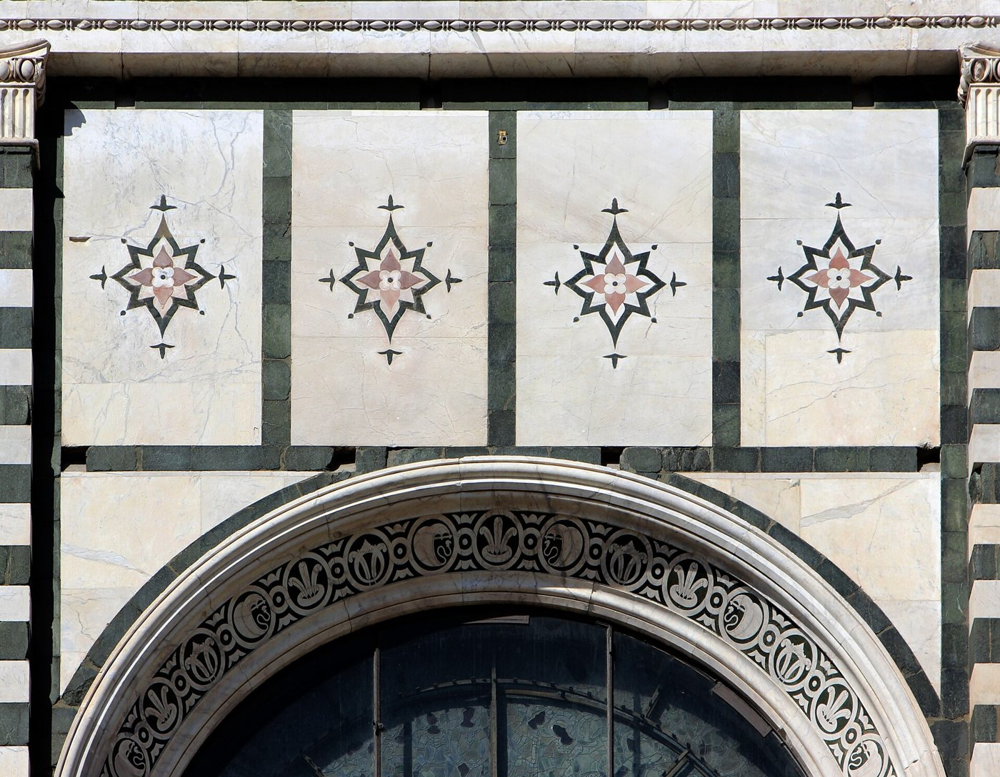
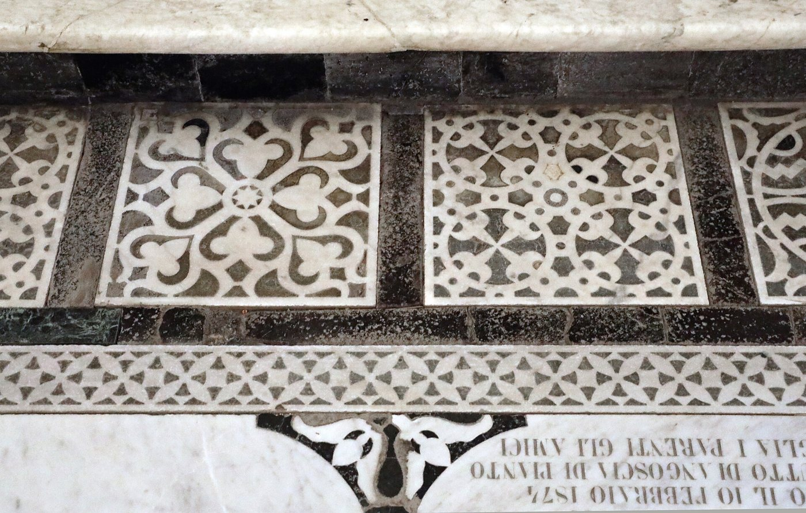
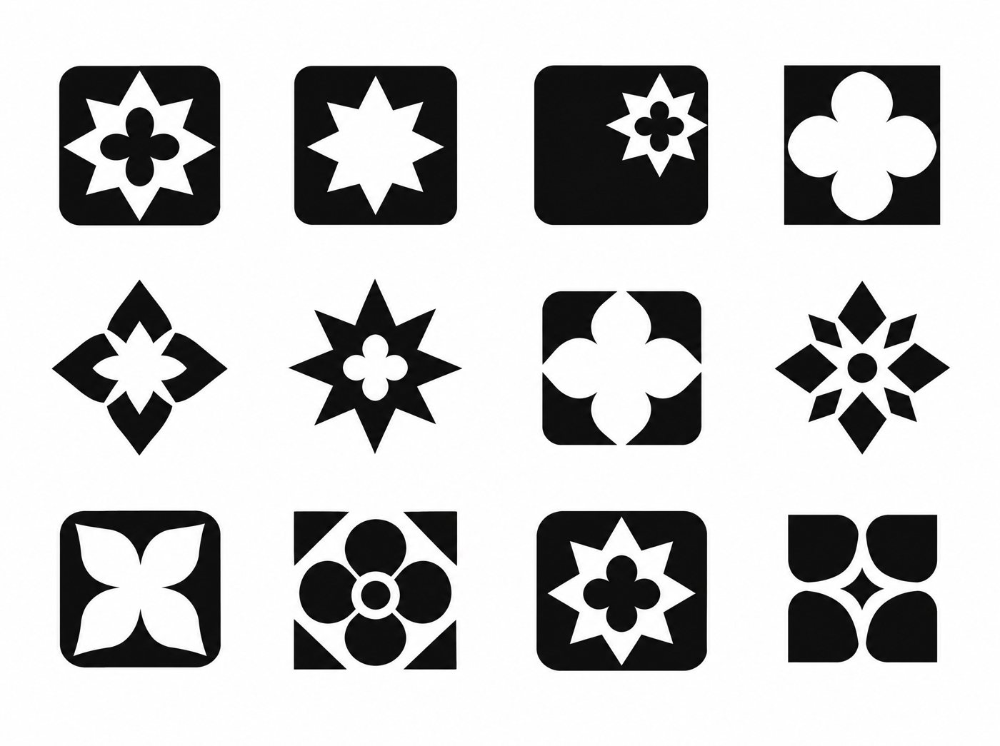

Four stones are four rooms. The star is Florence, in the middle of the home. The lit stone follows the person. The star keeps their pulse.
Drawn in code from the sketch you picked, so the stone shapes are close, not final. Rooms and pulse here are a demonstration, not real data.
Florence the city, not Florence the nurse. For eight hundred years its churches have been faced in marble inlay: white and green stone, with touches of rose, cut and set flush into each other. Nothing sits on top. Everything is set in. That is also how this product works: care, inlaid.

The upper facade of Santa Maria Novella, designed by Leon Battista Alberti around 1458 to 1478. A star set in a square panel. This is where the star, and the green, white and rose, come from.
Photo: Francesco Bini, Wikimedia Commons, CC BY-SA 4.0
Fifteenth century inlaid floor panels at San Miniato al Monte. Four rounded petals meeting at a centre, where the gaps between the stones make the pattern. This is where the four stones come from.
Photo: Francesco Bini, Wikimedia Commons, CC BY-SA 4.0
Both photographs were given to an image model with a brief for bold one-colour trademarks. It returned this sheet. Jesse picked the last one, bottom right: four stones, and the star is only the space between them.
Generated 21 Sep 2026, Higgsfield, from the two photographs aboveThe mark is a reduction, not a copy of any single panel. Alberti's star has eight points; ours has four, because it is the gap left by four rounded stones. The star is never drawn on its own, which also keeps it clear of the four-point "sparkle" that AI products use.
Second meaning, added after the pick: read from above, the four stones are the rooms of a home and the star is Florence in the middle of it. That is what lets the mark move.
The photographs are reference only and are not part of the brand. The final mark still needs to be drawn by hand as a vector and checked by a trademark search.
,_specchiature_della_facciata_di_santa_maria_novella,_1458-78_ca.,_registro_superiore_02.jpg){kind=link}
{kind=link}